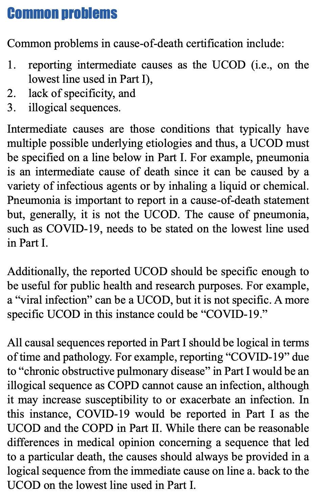
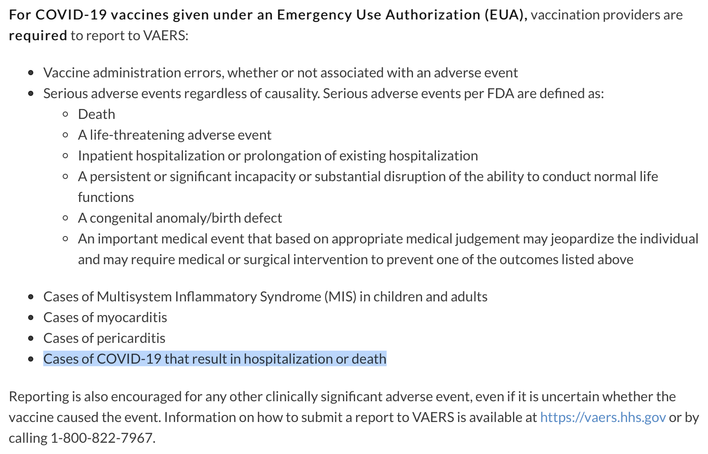
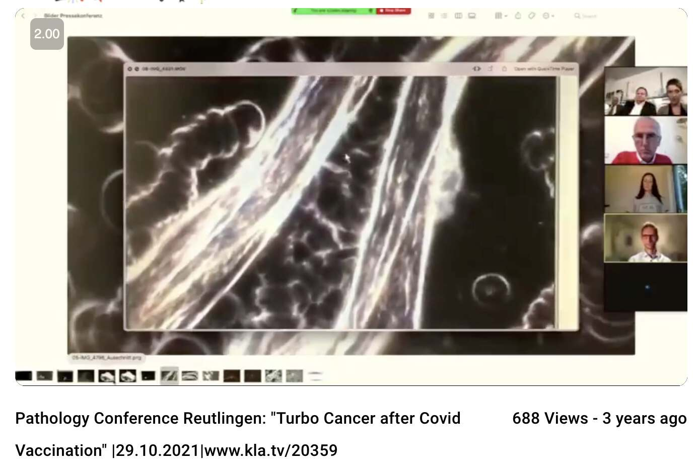
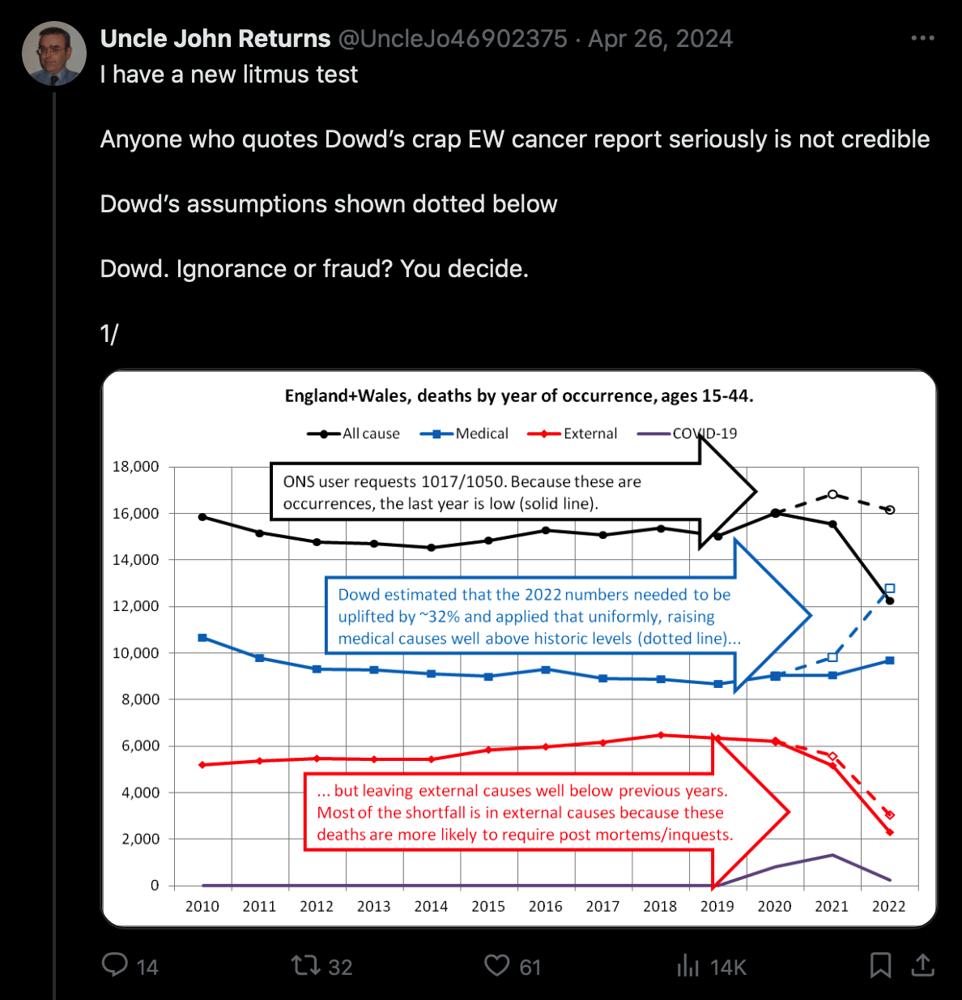
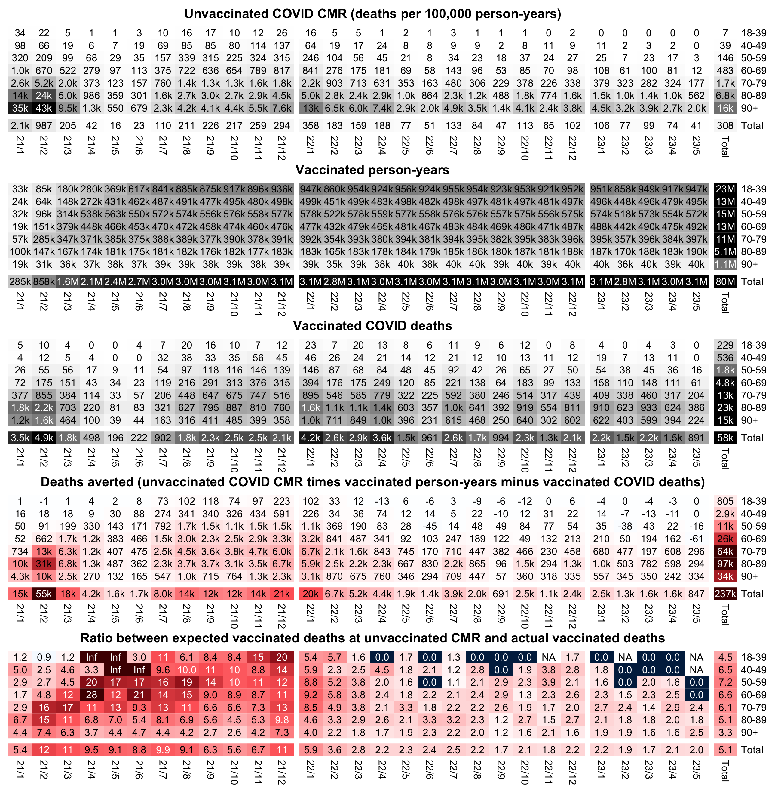
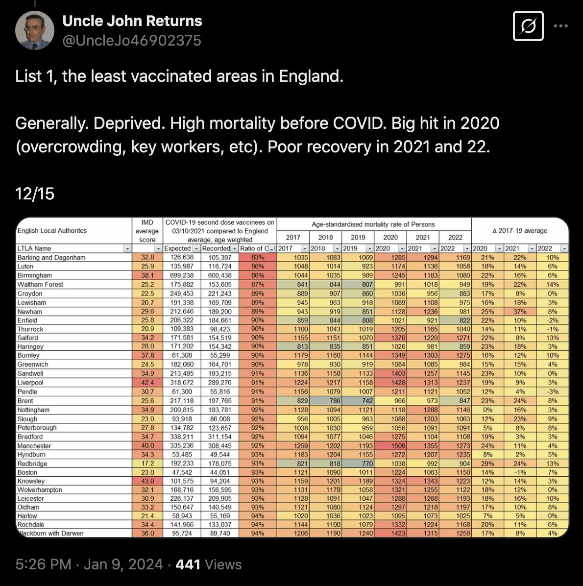

Other parts: rootclaim.html, rootclaim2.html.
One of the issues that was brought up during the debate was if around 50% of deaths attributed to COVID were deaths that were deaths with COVID but not primarily due to COVID.
In the United States the percentage of deaths with underlying cause COVID relative to multiple cause COVID was about 88% in 2020, 87% in 2021, and 73% in 2022. So in the vast majority of deaths certificate where COVID was mentioned anywhere on the certificate, COVID was listed as the underlying cause of death:
> v=fread("curl -Ls sars2.net/f/vital.csv.xz|xz -dc")
> v[cause=="U071",.(ucd=sum(ucd),mcd=sum(mcd)),year][,ratio:=ucd/mcd][]|>print(r=F)
year ucd mcd ratio
2020 350831 397566 0.8824472
2021 416893 478402 0.8714282
2022 186552 254355 0.7334316
2023 49932 77264 0.6462518
The death record data that is used at CDC WONDER can be downloaded from CDC's website as fixed-width text files. [https://www.cdc.gov/nchs/data_access/vitalstatsonline.htm#Mortality_Multiple, https://sars2.net/stat.html#Download_fixed_width_and_CSV_files_for_the_NVSS_data_used_at_CDC_WONDER] Unlike CDC WONDER, the fixed-width files show the list of causes of death for each individual person, and they show which part and line of the death certificate each cause appeared in. The total number of deaths in the files is identical to CDC WONDER if you exclude overseas territories and you exclude deaths among non-US residents.
For example in the year 2021, both the fixed-width files and CDC WONDER have 416,893 deaths with the underlying cause of death U07.1 (COVID). But 314,103 or about 75% of the death records also had one of these respiratory-related ICD codes: J18.9 (Pneumonia, unspecified), J80 (Adult respiratory distress syndrome), J96.0 (Acute respiratory failure), J96.9 (Respiratory failure, unspecified), or R09.2 (Respiratory arrest):
library(readr);library(data.table)
system("wget https://ftp.cdc.gov/pub/Health_Statistics/NCHS/Datasets/DVS/mortality/mort2021us.zip;unzip mort2021us.zip")
t=setDT(read_fwf("VS21MORT.DUSMCPUB_r20230320.txt",fwf_cols(restatus=c(20,20),age=c(70,73),ucod=c(146,149),cause1=c(165,170),cause2=c(172,177),cause3=c(179,184),cause4=c(186,191),cause5=c(193,198),cause6=c(200,205),cause7=c(207,212),cause8=c(214,219),cause9=c(221,226),cause10=c(228,233),cause11=c(235,240),cause12=c(242,247),cause13=c(249,254),cause14=c(256,261),cause15=c(263,268),cause16=c(270,275),cause17=c(277,282),cause18=c(284,289),cause19=c(291,296),cause20=c(298,303)),col_types=cols(cause14=col_character())))
t=t[restatus!=4]
t[,age:=ifelse(age%/%1000%in%c(1,9),age%%1000,0)]
l=na.omit(t[,.(id=.I,age,pos=rep(1:20,each=.N),ucod,cause=unlist(.SD,,F)),.SDcols=patterns("cause")])
l[,line:=substr(cause,1,1)][,code:=substr(cause,3,6)]
ua=\(x,y,...){u=unique(x);y(u,...)[match(x,u)]}
dotcode=\(x)ifelse(x%like%"^ ",substr(x,2,4),sub("(...)(.)","\\1.\\2",x))
l[,code:=ua(code,dotcode)][,ucod:=ua(ucod,dotcode)]
icd=fread("http://sars2.net/f/wondericd.csv")[,setNames(cause,code)]
sub=l[ucod=="U07.1"]
sub[,length(unique(id))] # 416893 (UCD is COVID)
sub[code%like%"^(J80|J18.9|J96.0|J96.9|R09.2)$",length(unique(id))] # 314103 (UCD is COVID and MCD includes other common respiratory codes)
And there are probably many other cases where a person died due to a respiratory illness, but COVID was the only respiratory-related cause of death that was listed on the death certificate.
The causes of death in a US death certificate are divided in two parts, where part 1 consists of the causes of death which directly led to the death, and part 2 consists of contributing conditions. The first line of part 1 is intended to contain the "immediate cause of death", which is the final event which occurred right before the death. The second line of part 1 is meant to show the condition which triggered the immediate cause of death, and the third line is meant to show the condition which triggered the condition on the second line, and so on. The underlying cause of death is the condition which triggered the cascade of events that led to the death. If for example the conditions in the record below were filed in the order of causality, then the immediate cause of death was cardiac arrest, which was caused by acute respiratory failure, which was caused by pneumonia, which was caused by the underlying cause of death COVID:
Age 52, UCD U07.1 COVID-19: Part 1, line 1: I46.9 Cardiac arrest, unspecified Part 1, line 2: J96.0 Acute respiratory failure Part 1, line 3: J18.9 Pneumonia, unspecified Part 1, line 4: U07.1 COVID-19 Part 2: N17.9 Acute renal failure, unspecified Part 2: E11.9 Non-insulin-dependent diabetes mellitus, withou... Part 2: E66.8 Other obesity Part 2: I69.4 Sequelae of stroke, not specified as haemorrhag...
However often the causes of death in part 1 are not filled in following an order of causality, like for example here where it looks like respiratory failure triggered chronic kidney disease which triggered COVID:
Age 65, UCD U07.1 COVID-19: Part 1, line 1: U07.1 COVID-19 Part 1, line 2: N18.5 Chronic kidney disease, stage 5 Part 1, line 3: J96.9 Respiratory failure, unspecified
Or here it looks like cardiac arrest triggered respiratory arrest which triggered COVID:
Age 57, UCD U07.1 COVID-19: Part 1, line 1: U07.1 COVID-19 Part 1, line 2: R09.2 Respiratory arrest Part 1, line 3: I46.9 Cardiac arrest, unspecified
CDC's guidelines for filling COVID death certificates mention that it's a common error that the causes of death in part 1 are not listed in the order of causality: [https://www.cdc.gov/nchs/data/nvss/vsrg/vsrg03-508.pdf]

But anyway, when I selected 10 random people who died with underlying cause COVID in 2021, 8 of the people also had some other respiratory-related ICD code included in part 1 of the death certificate. The immediate cause of death was listed as COVID among 4 people, respiratory failure among 3 people, and adult respiratory distress syndrome among 2 people.
For example the first person shown below has cancers of rectum, mouth, and pharynx listed as contributing causes of death in part 2, but in part 1 the underlying cause is listed as COVID, which led to pneumonia, which led to adult respiratory distress syndrome as the immediate cause of death:
> set.seed(0)
> sub[id%in%sample(unique(id),10),paste0("Age ",age[1],", UCD ",ucod[1]," ",icd[ucod[1]],":\n",paste0(ifelse(line==6,"Part 2",paste0("Part 1, line ",line)),": ",code," ",icd[code],collapse="\n")),id]$V1|>writeLines(sep="\n\n")
Age 61, UCD U07.1 COVID-19:
Part 1, line 1: J80 Adult respiratory distress syndrome
Part 1, line 2: J18.9 Pneumonia, unspecified
Part 1, line 3: U07.1 COVID-19
Part 2: C80 Malignant neoplasm without specification of site
Part 2: C20 Malignant neoplasm of rectum
Part 2: C06.9 Mouth, unspecified - Malignant neoplasms
Part 2: C14.0 Pharynx, unspecified - Malignant neoplasms
Age 70, UCD U07.1 COVID-19:
Part 1, line 1: R68.8 Other specified general symptoms and signs
Part 1, line 2: A41.9 Septicaemia, unspecified
Part 1, line 3: U07.1 COVID-19
Part 1, line 3: J18.9 Pneumonia, unspecified
Part 2: E14.9 Unspecified diabetes mellitus, without complica...
Part 2: I48 Atrial fibrillation and flutter
Age 70, UCD U07.1 COVID-19:
Part 1, line 1: J96.9 Respiratory failure, unspecified
Part 1, line 2: U07.1 COVID-19
Part 1, line 2: J18.9 Pneumonia, unspecified
Age 81, UCD U07.1 COVID-19:
Part 1, line 1: J80 Adult respiratory distress syndrome
Part 1, line 2: J18.9 Pneumonia, unspecified
Part 1, line 3: U07.1 COVID-19
Age 79, UCD U07.1 COVID-19:
Part 1, line 1: U07.1 COVID-19
Part 2: E14.9 Unspecified diabetes mellitus, without complica...
Age 92, UCD U07.1 COVID-19:
Part 1, line 1: U07.1 COVID-19
Part 1, line 1: J18.9 Pneumonia, unspecified
Part 2: G30.9 Alzheimer disease, unspecified
Part 2: F20.0 Paranoid schizophrenia
Part 2: I10 Essential (primary) hypertension
Age 94, UCD U07.1 COVID-19:
Part 1, line 1: U07.1 COVID-19
Part 1, line 1: J18.9 Pneumonia, unspecified
Part 1, line 2: I21.4 Acute subendocardial myocardial infarction
Part 1, line 3: I50.9 Heart failure, unspecified
Part 1, line 4: N18.9 Chronic renal failure, unspecified
Age 51, UCD U07.1 COVID-19:
Part 1, line 1: J96.9 Respiratory failure, unspecified
Part 1, line 2: U07.1 COVID-19
Part 1, line 2: B99 Other and unspecified infectious diseases
Part 2: F17.9 Mental and behavioural disorders due to use of ...
Age 99, UCD U07.1 COVID-19:
Part 1, line 1: U07.1 COVID-19
Age 90, UCD U07.1 COVID-19:
Part 1, line 1: J96.9 Respiratory failure, unspecified
Part 1, line 2: U07.1 COVID-19
Part 1, line 2: J18.9 Pneumonia, unspecified
On the list above there is only one death certificate where COVID was the only listed cause of death. Some people have made claims like that 98% of death certificates include some other cause of death besides COVID, which means that only 2% of people died only due to COVID and no other cause. However typically even if the only known cause of death would be COVID, a death certificate might still list COVID as the underlying cause of death, pneumonia as an intermediate cause of death, and respiratory failure as the immediate cause of death.
CDC's guidelines for filling a COVID death certificate says: "If COVID-19 played a role in the death, this condition should be specified on the death certificate. In many cases, it is likely that it will be the UCOD, as it can lead to various life-threatening conditions, such as pneumonia and acute respiratory distress syndrome (ARDS). In these cases, COVID-19 should be reported on the lowest line used in Part I with the other conditions to which it gave rise listed on the lines above it." [https://www.cdc.gov/nchs/data/nvss/vsrg/vsrg03-508.pdf] The same document by CDC also says that pneumonia is imporant to report on a death certificate: "Pneumonia is important to report in a cause-of-death statement but, generally, it is not the UCOD. The cause of pneumonia, such as COVID-19, needs to be stated on the lowest line used in Part I."
Denis Rancourt claimed that because pneumonia was listed as a cause of death in more than half of US death certificates with UCD COVID, it meant that "more than half of the deaths assigned as COVID-19 deaths could include life-threatening co-occurring bacterial pneumonia". [https://sars2.net/nopandemic2.html#Denis_Rancourt_Did_over_half_of_death_certificates_for_COVID_refer_to_bacterial_pneumonia] However Rancourt misinterpreted the ICD code J18.9 ("Pneumonia, unspecified") to mean bacterial pneumonia, even though CDC's guidelines specifically say that pneumonia caused by COVID is important to list on the death certificate. But an ICD code specifically for bacterial pneumonia was only included in about 2% of all US death certificates with underlying cause COVID. [ibid.]
In the year 2021 there were 462,193 deaths where COVID was listed anywhere on the death certificate:
> l[code=="U07.1",length(unique(id))] [1] 462193
But in only about 10% of the death certificates COVID was listed in part 2 of the certificate, which means that COVID was considered to have contributed to the death but not be part of the primary sequence of events which led to the death:
> l[line==6&code=="U07.1",length(unique(id))] # line 6 is part 2 and lines 1-5 are lines of part 1 [1] 44859
Some people seem to think that COVID is commonly listed as a cause of death for people who die from external causes like car accidents or drug overdoses. However I found only 2,279 people who died in 2021 with UCD external causes but MCD COVID:
> sub=l[id%in%id[code=="U07.1"]][ucod%like%"[V-Z]"] > sub[,length(unique(id))] [1] 2279
Here's a random sample of 4 out of the 2,279 people:
> set.seed(0)
> sub[id%in%sample(unique(id),4),cat(paste0("Age ",age[1],", UCD ",ucod[1]," ",icd[ucod[1]],":\n",paste0(ifelse(line==6,"Part 2",paste0("Part 1, line ",line)),": ",code," ",icd[code],collapse="\n"),"\n\n")),id]
Age 28, UCD X42 Accidental poisoning by and exposure to narcotics and psychodysleptics [hallucin...:
Part 1, line 1: T40.4 Other synthetic narcotics
Part 1, line 1: X42 Accidental poisoning by and exposure to narcotics and psychodysleptics [hallucin...
Part 2: U07.1 COVID-19
Part 2: B99 Other and unspecified infectious diseases
Part 2: F11.9 Mental and behavioural disorders due to use of opioids, unspecified mental and b...
Age 34, UCD Y85.0 Sequelae of motor-vehicle accident:
Part 1, line 1: J96.0 Acute respiratory failure
Part 1, line 1: J96.1 Chronic respiratory failure
Part 1, line 1: R09.0 Asphyxia
Part 1, line 1: J18.9 Pneumonia, unspecified
Part 1, line 1: A41.9 Septicaemia, unspecified
Part 1, line 2: T90.5 Sequelae of intracranial injury
Part 1, line 2: T94.1 Sequelae of injuries, not specified by body region
Part 2: I10 Essential (primary) hypertension
Part 2: T91.3 Sequelae of injury of spinal cord
Part 2: U07.1 COVID-19
Part 2: Y85.0 Sequelae of motor-vehicle accident
Part 2: F17.9 Mental and behavioural disorders due to use of tobacco, unspecified mental and b...
Age 30, UCD X42 Accidental poisoning by and exposure to narcotics and psychodysleptics [hallucin...:
Part 1, line 1: T40.4 Other synthetic narcotics
Part 1, line 1: X42 Accidental poisoning by and exposure to narcotics and psychodysleptics [hallucin...
Part 2: U07.1 COVID-19
Part 2: B99 Other and unspecified infectious diseases
Part 2: F19.9 Mental and behavioural disorders due to multiple drug use and use of other psych...
Age 71, UCD X59.9 Exposure to unspecified factor causing other and unspecified injury:
Part 1, line 1: S06.5 Traumatic subdural haemorrhage
Part 1, line 2: S09.9 Unspecified injury of head
Part 1, line 2: X59.9 Exposure to unspecified factor causing other and unspecified injury
Part 2: U07.1 COVID-19
Part 2: J18.9 Pneumonia, unspecified
Part 2: I10 Essential (primary) hypertension
Part 2: J44.9 Chronic obstructive pulmonary disease, unspecified
Part 2: J44.1 Chronic obstructive pulmonary disease with acute exacerbation, unspecified
Part 2: F17.9 Mental and behavioural disorders due to use of tobacco, unspecified mental and b...
In the output above the second person had the underlying cause of death "Sequelae of motor-vehicle accident" but the immediate cause of death acute respiratory failure. So maybe they got COVID while they were hospitalized after a traffic accident and the COVID contributed to their death.
The first and third person above seem to have died of an overdose of recreational drugs and the fourth person seems to have died of a head injury, so none of them should probably not be counted as COVID deaths. However cases like that are probably not too common, since only about 0.5% of MCD COVID deaths in 2021 had UCD external causes.
The code below shows 10 random VAERS reports from the year 2021 of people who received a COVID vaccine and died later. [https://vaers.hhs.gov/data/datasets.html] Based on the details available in the reports, none of the deaths was clearly due to vaccination. Only one of the reports seems like a death that might be fairly likely to be due to vaccination, one death seems remotely likely to be due to vaccination, 7 out of 10 deaths seem unrelated to vaccination, and one report did not include enough details to evaluate whether the death was due to vaccination or not:
t=fread("2021VAERSDATA.csv")
t=merge(t,fread("2021VAERSVAX.csv"))
t=merge(t,fread("2021VAERSSYMPTOMS.csv"))
set.seed(0)
o=t[VAX_TYPE=="COVID19"&DIED=="Y"][sample(.N,10)]
o=o[,.(VAERS_ID,AGE_YRS,VAX_DATE,ONSET_DATE,DATEDIED,SYMPTOM1,SYMPTOM2,SYMPTOM3,SYMPTOM4,SYMPTOM5,SYMPTOM_TEXT)]
writeLines(apply(o,1,\(x)paste(paste0(names(o),": ",x),collapse="\n")),sep="\n\n")
# 90-year-old who had a fall a month after vaccination and died of cardiac dysrhytmia in ER VAERS_ID: 1924852 AGE_YRS: 90 VAX_DATE: 11/09/2021 ONSET_DATE: 12/03/2021 DATEDIED: 12/03/2021 SYMPTOM1: Haematocrit decreased SYMPTOM2: Haemoglobin decreased SYMPTOM3: International normalised ratio normal SYMPTOM4: Lymphocyte percentage decreased SYMPTOM5: Mean cell haemoglobin concentration decreased SYMPTOM_TEXT: No immediate adverse events or signs/symptoms post vaccination. On 12/03/2021 at approximately 1420 Patient was found on the floor by staff from a fall incident he was complaining of pain to neck and back and due to personal hx of cervical fractures EMS notified for transport to ER. Poor oxygenation noted and oxygen applied via nasal cannula while awaiting EMS transport to Hospital ER. At approximately 1700 Nursing Home received word that all scans/x-rays were normal and resident would be returning to Nursing Home. Some time after this notification while resident was still in the ER he developed a cardiac dysrhythmia which he succumbed to. # died 2 months after vaccination possibly of cancer VAERS_ID: 1212176 AGE_YRS: 75 VAX_DATE: 02/08/2021 ONSET_DATE: 03/18/2021 DATEDIED: 04/14/2021 SYMPTOM1: Adenocarcinoma metastatic SYMPTOM2: Death SYMPTOM3: Femur fracture SYMPTOM4: SYMPTOM5: SYMPTOM_TEXT: Death Metastatic adenocarcinoma Intertrochanteric fracture of left femur # was diagnosed with stage 4 cancer 3 years before vaccination # developed a respiratory condition and pneumonia due to an unspecified cause about a week after vaccination VAERS_ID: 1744676 AGE_YRS: 78 VAX_DATE: 02/18/2021 ONSET_DATE: 02/24/2021 DATEDIED: 03/26/2021 SYMPTOM1: Death SYMPTOM2: Dyspnoea SYMPTOM3: Feeling abnormal SYMPTOM4: Flank pain SYMPTOM5: Gait inability SYMPTOM_TEXT: See continuation page o Jan 2018 Mom was diagnosed with stage 4 lung/brain/lymph node cancer o Feb 25th: Mom was brought to ER for a respiratory issue. Full set of tests were done, nothing was found and she was sent home. ER was happy she was going to see her primary the next day for follow up. o Feb 27th: Mom woke up feeling ok, by afternoon she was too weak to walk and brought back to the ER. Lungs shown with pneumonia and inflammation. Mom was admitted to ICU that evening. o Feb 28th: Mom seemed ok in ICU, but oxygen demands increased. o Mar 1st: Mom was placed on bi-pap o Mar 2nd: Mom was placed on vent o March 8th: Mom fought back and was able to come off vent o March 12th: Due to lack of rooms in ICU (from my understanding), Mom was moved to medical o March 13th: Mom expressed pain behind knee (maybe referred pain due to bleeding noted on the 14th) o March 14th: Mom had severe side pain, blood work indicated potential internal bleed. Hours later a CT scan was done and confirmed bleeding. Plan was to give her plasma and maybe other drugs to hopefully stop the bleed (that doesn't make complete sense to me, but I'm not a doctor). Mom said she "Felt like she was dying". The nurse said that given Mom's condition, it would be best that someone spend the night with her. I relieved my sister around 8:30 that night. Mom was receiving plasma and whole blood. I asked the nurse if her blood pressure and pulse were monitored at the nurses station, she said no but she would come in every hour to check (note additional checks were done every 15 minutes when a blood transfusion was started). Mom's door was closed due to 4 other psych patients on the floor making a lot of noise, so I was the only one to hear alarms. Mom was too weak and couldn't press the nurse button when her side pain increased after 10 pm. I pushed the button for her, a couple minutes later a nurse came on the intercom wondering what Mom needed, and what felt like 10 minutes later a nurse arrived. Around 11:15 pain meds were administered but didn't have any impact initially. I questioned whether Mom should be in the ICU given the internal bleed, pain, and number of units of blood/plasma she was receiving (in my mind she was critical enough not to be on a medical floor where there is a high patient to nurse count and no continuous monitoring of vitals). o March 15th The on call doctor came in around 12:30 am, I think, after pain meds started to settle Mom. His first words, which I felt were said in a stern way, were "I hear you want your Mom moved to ICU". I expressed my concerns and that I was just trying to do what was best for Mom. His voice softened and he said there is nothing more that ICU can do. My impression was that he stated they would give more blood and if vitals drop, then move her to ICU. Nurse came back in after the doctor left (note I felt the nurse did a great job that night) and said the doctor wanted her to discuss with me re-evaluating whether Mom should be a full code... It is very confusing since I felt the doctor was saying she was stable enough to stay on the medical floor, but then have the full code reconsidered at 1:00 in the morning by family... I was in full tears after she left, didn't sleep, and said a few rosaries. At 3:30 am Mom was moved to ICU. By 6 or 7 am Mom had received 5 units of blood and 5 units of plasmas, which I believe is as much as the body can hold... Around 7:15 am there was a clear indication on the monitor that Mom's blood pressure was dropping linearly over last hour. Her breathing over night was 18 and normal, but increased to over 20 was very labored. Her heart rate went from 90s to 114. I walked over to ICU nurse with tears and there is a scary trend happening, do I need to call family in. She stated that "Mom is in the right place and no need to call family". But took no action to correct decline. Her only action was to get zophrane (or similar drug) since Mom was nauseous. It wasn't until after the doctor came in after 8:15 am that the decision was made to transport. At that point family was allowed to come in 1 by 1. It was also the same time that the snow storm started and Mom had to go by ambulance, which by time coordinating wass complete didn't happen until 11 am. Mom was given blood pressure medication which helped initially, but by time Mom reached it we were told her blood pressure was 37/19. It feels if action was taken over night, Mom could have been flown and the blood pressure might not have dropped that far. Mom's procedure was successful to stop bleeding. o March 16th: We were told that given the amount of fluid Mom's lungs were starting to fill with fluid again and given low blood pressure on arrival, her kidneys were shutting down. o March 17th: Mom was placed on hospice o March 18th: Mom was brought home o March 26th: Mom went peacefully to heaven # died 6 months after vaccination but 8 days after testing positive for COVID VAERS_ID: 1623505 AGE_YRS: 89 VAX_DATE: 02/25/2021 ONSET_DATE: 08/10/2021 DATEDIED: 08/18/2021 SYMPTOM1: Death SYMPTOM2: Dyspnoea SYMPTOM3: Myalgia SYMPTOM4: Oxygen saturation decreased SYMPTOM5: Pulseless electrical activity SYMPTOM_TEXT: 8/10/21: He developed SOB, cough, and muscle aches, starting 3 days ago. He was referred to ER, where he was admitted on 8/10/21. Tested positive for COVID-19 on 8/10/21. 8/18/21: waxing and waning mentation, requires non-rebreather mask and desaturates quickly. In the afternoon of 8/18/21, he was found in cardiac arrest, PEA and code was called. Family requested to stop resuscitation given his age and poor prognosis. Time of death was called at 1628. Note: He received Pfizer vaccines on 2/3/21 and 2/25/21. # this might be a real vaccine death in case the story is true # however the 5 USD coupon adds a dramatic element that makes the story seem less believable # the death might have also been due to an overdose of a recreational drug VAERS_ID: 1427998 AGE_YRS: 47 VAX_DATE: 05/21/2021 ONSET_DATE: 05/21/2021 DATEDIED: 05/21/2021 SYMPTOM1: Death SYMPTOM2: Heart rate increased SYMPTOM3: SYMPTOM4: SYMPTOM5: SYMPTOM_TEXT: Patients appointment was either 2:15 or 2:30. His Apple watch recorded it's last heart beat reading at 3:15 pm, 05/21/2021, within an hour after receiving his second Moderna Covid-19. His heart rate increased rapidly from 3:00 to 3:15, reading 104 - 106 - 108 - 116 bpm. I can provide a photo of these last four readings if you need them. I don't know other symptoms. His body was found by police who were called for a well-check three days later, 05/24/2021. Patient died unattended, at home, alone. I only know for sure the vaccine was administered at a Target store near his home. Patient texted me at 2:48pm saying that Target gave him a $5 coupon for getting his vaccine, and he was going to use it to buy Tylenol. # here the cardiac arrest occurred 16 days after vaccination so it might not be related to vaccination VAERS_ID: 1168104 AGE_YRS: 38 VAX_DATE: 03/02/2021 ONSET_DATE: 03/18/2021 DATEDIED: 03/18/2021 SYMPTOM1: Exposure during pregnancy SYMPTOM2: SYMPTOM3: SYMPTOM4: SYMPTOM5: SYMPTOM_TEXT: Pfizer COVID Vaccine treatment under Emergency Use Authorization(EUA): Vaccination received 3/2/2021. On 3/16/2021, maternal cardiac arrest, terminal fetal bradycardia, emergent C-section. Likely amniotic fluid embolism and DIC. # died 7 months after vaccination but 13 days after testing positive for COVID VAERS_ID: 1759418 AGE_YRS: 79 VAX_DATE: 02/19/2021 ONSET_DATE: 10/02/2021 DATEDIED: 10/02/2021 SYMPTOM1: SARS-CoV-2 test positive SYMPTOM2: SYMPTOM3: SYMPTOM4: SYMPTOM5: SYMPTOM_TEXT: Fully COVID vaccinated patient who admitted through emergency department with COVID positive test on 09/19/21. Patients respiratory status continued to decline, he required CCU admission high flow oxygen, and subsquently BiPAP. Medical team reviewed ongoing respiratory decline and grave status with patient and family who declined intubation. Patient moved to comfort care and died on 10/02/21. # there are so few details available that it is not possible to evaluate if the death was due to vaccination VAERS_ID: 1682014 AGE_YRS: NA VAX_DATE: ONSET_DATE: DATEDIED: SYMPTOM1: Death SYMPTOM2: SYMPTOM3: SYMPTOM4: SYMPTOM5: SYMPTOM_TEXT: passed away; This is a spontaneous report received from a non-contactable consumer from a Pfizer-sponsored program. The consumer reported same events for two patients (two friends). This is one of the two reports. A patient of unspecified age and gender received bnt162b2 (PFIZER-BIONTECH COVID-19 VACCINE), dose 2 via an unspecified route of administration on an unspecified date as dose 2, single; dose 1 via an unspecified route of administration on an unspecified date as dose 1, single for covid-19 immunisation. The patient's medical history and concomitant medications were not reported. The patient took both doses and passed away on an unspecified date. The patient died on an unspecified date. It was not reported if an autopsy was performed. No follow-up attempts are possible; information about lot/batch number cannot be obtained. No further information is expected.; Sender's Comments: Linked Report(s) : US-PFIZER INC-202101123341 Same reporter/drug/event, different patient; Reported Cause(s) of Death: passed away # died 4 months after vaccination but 19 days after a positive COVID test VAERS_ID: 1700856 AGE_YRS: 62 VAX_DATE: 05/22/2021 ONSET_DATE: 08/24/2021 DATEDIED: 09/13/2021 SYMPTOM1: Endotracheal intubation SYMPTOM2: Intensive care SYMPTOM3: Nausea SYMPTOM4: Positive airway pressure therapy SYMPTOM5: Respiratory failure SYMPTOM_TEXT: Janssen COVID-19 Vaccine EUA: COVID-19 case resulting in Hospitalization / Death. Patient received Janssen Vaccine on 5/22/2021. Patient was diagnosed with COVID-19 on 8/25/2021 with symptoms of nausea, vomiting, diarrhea starting on 8/24/2021. Per patient reoprt, she was admitted to a different facility for COVID-19 Pneumonia for two days. Patient did not require oxygen at that time. On 9/4/2021 patient presented to ED via EMS with complaints of shortness of breath. When EMS arrived patient was 55-70% on room air, was placed on a non-rebreather and came up to 88%, and was then placed on CPAP en route. Patient was admitted and started on dexamethasone and empiric ceftriaxone. On 9/10/2021, respiratory status # died of COVID 9 months after being vaccinated VAERS_ID: 1939822 AGE_YRS: 74 VAX_DATE: 03/10/2021 ONSET_DATE: 12/09/2021 DATEDIED: 12/09/2021 SYMPTOM1: COVID-19 SYMPTOM2: SARS-CoV-2 test positive SYMPTOM3: Vaccine breakthrough infection SYMPTOM4: SYMPTOM5: SYMPTOM_TEXT: Breakthrough Cases
At least 4 out of 10 of the reports above appear to be deaths due to COVID. The website of HHS says that vaccination providers are required to report COVID cases that result in death or hospitalization to VAERS (even though most COVID deaths that occurred months or years after vaccination are clearly not reported, because otherwise there would be much more VAERS reports for COVID deaths): [https://vaers.hhs.gov/faq.html]

The topic of turbo cancer was brought up during the debate. Earlier I showed that cancer ASMR in the United States has gone down each year since 2019. [rootclaim.html#Undeniable_rise_in_turbo_cancer_4c] I haven't found data on whether rapidly developing cancers have become more common since 2021 in the United States, but it has not been the case in Germany according to the head of the German Center for Cancer Registry Data.
I believe the term "turbo cancer" was first introduced in the German pathology conference held by Arne Burkhardt in September 2021. The term was specifically used by the lawyer Elmar Becker, who conveyed an anecdote about turbo cancer from the German alternative medical practicioner Ute Krüger. [turbo.html] Krüger later participated herself in Burkhardt's second pathology conference.
Ute Krüger claims that she is able to employ "energy field technology" to detect imbalances in the energy field which is the "non-material part through which the body and soul communicate". [https://active-health.se/sv/metod]
Another speaker in the same conference was Alex Bolland, who runs a quack doctoring practice at a spa where he employs techniques like kirlian photography, homeopathy, bioresonance therapy, and psychosomatic energetics. [https://www.bollants.de/en/natural-medicine/felke-med/concept?item=91ba70e0-1a4f-4184-a18c-658ef29e543d] He said that vaccines contain graphene oxide, mini-robots, and a parasite called Treponasoma cruzi:
Another speaker in the conference was Uta Langer, who claimed that the image below showed a synthetic fiber she found in the blood of a vaccinated person, and when another person asked if it was a Morgellons fiber, Langer answered that she didn't know if it was Morgellons or not:

Ute Krüger was presented as an early expert about turbo cancer in the alternative media, and when I searched for the oldest BitChute videos that matched the term "turbo cancer", 7 out of the 10 oldest videos were videos by her. [https://www.bitchute.com/search?query=turbo+cancer&sort=old]
In 2024 the German newspaper Berliner Zeitung published a reader-contributed article about turbo cancer by Krüger. [https://www.berliner-zeitung.de/open-source/corona-impfstoffe-pathologin-warnt-diese-mrna-technik-ist-nicht-ausreichend-getestet-li.2259438] In the article the main form of turbo cancer she focused on was breast cancer in young women.
Her evidence that there had been an increase in breast cancer in young women was largely anecdotal, but she also cited analysis about UK cancer rates by Ed Dowd's group Phinance Technologies. She wrote this in German: "A study from the UK in October 2023 examined the cancer mortality rate of 15- to 44-year-olds. These are very young people for whom cancer has previously been a rare cause of death. It was found that there was a 28 percent increase in cancer deaths from breast cancer in women in 2022." But the reason why Dowd's group found an increase in cancer deaths in 2022 was that they used an incorrect method to add in deaths they thought were missing because of a registration delay, because they assumed that cancer deaths had the same proportion of missing deaths as the overall proportion of missing deaths for all causes, even though in reality cancer deaths have a much shorter registration delay than deaths from external causes, and Dowd's group looked at cancer deaths in ages 15 to 44 where a large part of all deaths are due to external causes: [https://x.com/UncleJo46902375/status/1783797036749402598]

Later the German newspaper published a response to Krüger's article, which pointed out that her anecdotal claim of a rise in turbo cancer was not supported by actual cancer statistics: [https://www.berliner-zeitung.de/gesundheit-oekologie/corona-impfstoffe-und-turbo-krebs-was-die-fallzahlen-aus-deutschland-verraten-li.2262993, translated from German]
The cancer registry shows that for a decade, between 72,600 and 75,6000 women in Germany have been diagnosed with breast cancer each year. In 2022, around 74,500 women in Germany received the news that they had the disease.
[…]
The number of breast cancer diagnoses is not increasing among younger women either. Around 11,000 women between the ages of 30 and 49 in Germany are diagnosed with breast cancer for the first time every year. The number has been stable for many years - and it remained stable in 2021 and 2022.
[…]
However, whether the risk of dying from breast cancer is increasing for individual patients can be better determined using the so-called age-standardized mortality rate. How many patients out of 100,000 do not survive their disease in a year? In 2018, the figure was 12.4 out of 100,000, and in 2023 - after the pandemic and vaccination campaign - only 11.5 out of 100,000 died.
The same applies to all types of cancer taken together: the absolute number of cases has been rising slightly for years. But if you take into account the ageing of society, the mortality rate is falling continuously, most recently from 147.6 per 100,000 cancer patients in 2018 to 137.5 per 100,000 in 2023.
[…]
At the request of the Berliner Zeitung, the Center for Cancer Registry Data therefore looked even deeper into the figures and, in addition to the registry data and the cause of death statistics, also evaluated the hospital data, particularly on breast cancer.
Here, too, the German data show no development that gives cause for concern: "We find no evidence of a higher incidence, a higher mortality rate or an increased aggressive tumor behavior that could be linked to the vaccination," says Klaus Kraywinkel, head of the center.
The proportion of women with a poorly differentiated - i.e. particularly malignant - tumor was a good 29 percent of all breast cancer patients in the years 2018 to 2020. In 2021 and 2022 it even fell slightly, to just over 28 percent. Poor differentiation could be an indicator of particularly aggressive growth. So far, here too: all clear.
The picture did not change in terms of the diagnosed tumor sizes either. In 2018, doctors classified the tumor in six percent of the affected women as being in the "T3" category and in seven percent as being in the "T4" category - these are the two largest types of tumor. In the following years, these proportions remained unchanged - including in 2022.
The primary topic of the Rootclaim debate is whether vaccines saved or killed more people in the United States in the years 2020-2022. As far as I know, there is only public dataset available for COVID mortality in the United States that is grouped by vaccination status, age, and date, but the dataset it only starts from October 2021. So in order to estimate the number of COVID deaths averted by vaccination since the start of 2021, I looked at English data instead.
The UK Office for National Statistics has published datasets which show the number of COVID deaths in England grouped by vaccination status, age group, and month: https://www.ons.gov.uk/peoplepopulationandcommunity/birthsdeathsandmarriages/deaths/bulletins/deathsinvolvingcovid19byvaccinationstatusengland/deathsoccurringbetween1april2021and31may2023. I otherwise used data from the final 9th edition of the dataset, except it was missing the first 3 months of 2021 so I took them from the 7th edition of the dataset.
In the following code for each combination of age group and month, I calculated the COVID mortality rate in unvaccinated people and I multiplied it with the population size of vaccinated people, which gave me the expected number of COVID deaths in vaccinated people if they would've had the same COVID mortality rate as unvaccinated people. I got a total of about 294,951 expected deaths when I added together the expected deaths across all months and age groups. But the actual number of deaths in vaccinated people was only 58,256, so my calculation gave me about 236,695 deaths averted by COVID vaccination:
# CSV version of tables 1 and 2 of ONS spreadsheets (only table 2 is used here)
t=fread("http://sars2.net/f/ons.csv")
# the 7th edition was the last edition that included the first 3 months of 2021
t=t[ed==9|(ed==7&month<="2021-03")]
t=t[cause=="Deaths involving COVID-19"&age!="Total"]
# combine groups for different dose numbers into a single group for all vaccinated people
a=t[,.(dead=sum(dead),pop=sum(pop)),.(month,age,vax=status!="Unvaccinated")]
# add column for baseline mortality rate in unvaccinated people
me=merge(a[vax==T],a[vax==F,.(month,age,base=dead/pop)])
# get expected vaccinated deaths by multiplying vaccinated population size with unvaccinated baseline rate
me[,.(actual_dead=sum(dead),expected_dead=sum(pop*base))]
# actual_dead expected_dead
# 1: 58256 294950.9
In my calculation I used different baseline mortality rates for each month, so I took into account how different variants were associated with different mortality rates and how unvaccinated people acquired natural immunity over time. From the first table in the image below, you can see that the baseline COVID mortality rates were much lower at the end of the observation period than at the beginning. And from the last table you can see that in 2021 the baseline number of COVID deaths at unvaccinated mortality rates was about 6 to 12 times higher than the actual vaccinated number of deaths, but by 2023 the ratio had dropped to about 2, which is likely because unvaccinated people acquired natural immunity over time:

kimi=\(x){na=is.na(x);x[na]=0;e=floor(log10(ifelse(x==0,1,abs(x))));e2=pmax(e,0)%/%3+1;x[]=ifelse(abs(x)<1e3,round(x),paste0(sprintf(paste0("%.",ifelse(e%%3==0,1,0),"f"),x/1e3^(e2-1)),c("","k","M","B","T")[e2]));x[na]="NA";x}
t=fread("http://sars2.net/f/ons.csv")
t=rbind(t[ed==7&month<="2021-03"],t[ed==9])
t=t[cause=="Deaths involving COVID-19"&age!="Total"]
a=t[,.(dead=sum(dead),pop=sum(pop)),.(month,age,vax=status!="Unvaccinated")]
a=rbind(a,a[,.(dead=sum(dead),pop=sum(pop),month="Total"),.(age,vax)])
a=rbind(a,a[,.(dead=sum(dead),pop=sum(pop),age="Total"),.(month,vax)])
a[,month:=factor(month,,sub("20(..)-0*(\\d+)","\\1/\\2",unique(month)))]
me=merge(a[vax==T],a[vax==F,.(month,age,base=dead/pop)])
me[,.(actual_dead=sum(dead),expected_dead=sum(pop*base))]
m=a[,xtabs(dead/pop*1e5~age+month)];disp=kimi(m);maxcolor=max(m)
exp=.7
pal=sapply(255:0/255,\(i)rgb(i,i,i))
pal2=hsv(rep(c(21,0)/36,5:4),c(1,.8,.6,.3,0,.3,.6,.8,1),c(.3,.65,1,1,1,1,1,.65,.3))
pheatmap::pheatmap(m^exp,filename="i1.png",display_numbers=disp,
gaps_row=nrow(m)-1,gaps_col=c(seq(12,ncol(m),12),ncol(m)-1),
main="Unvaccinated COVID CMR (deaths per 100,000 person-years)",
border_color=NA,
cluster_rows=F,cluster_cols=F,legend=F,cellwidth=19,cellheight=11,fontsize=9,fontsize_number=8,
number_color=ifelse(m^exp>maxcolor^exp*.45,"white","black"),
breaks=seq(0,maxcolor^exp,,256),pal)
m2=a[vax==T,xtabs(pop~age+month)];disp2=kimi(m2);maxcolor2=max(m2[,-ncol(m2)])
pheatmap::pheatmap(m2^exp,filename="i2.png",display_numbers=disp2,
gaps_row=nrow(m)-1,gaps_col=c(seq(12,ncol(m),12),ncol(m)-1),
main="Vaccinated person-years",
border_color=NA,
cluster_rows=F,cluster_cols=F,legend=F,cellwidth=19,cellheight=11,fontsize=9,fontsize_number=8,
number_color=ifelse(m2^exp>maxcolor2^exp*.45,"white","black"),
breaks=seq(0,maxcolor2^exp,,256),pal)
avert=me[month!="Total"&age!="Total",.(month,age,base=pop*base,dead=dead)]
avert=rbind(avert,avert[,.(dead=sum(dead),base=sum(base),month="Total"),age])
avert=rbind(avert,avert[,.(dead=sum(dead),base=sum(base),age="Total"),month])
m3=avert[,xtabs(base-dead~age+month)];disp3=kimi(m3);maxcolor3=max(m3[,-ncol(m3)])
pheatmap::pheatmap(abs(m3)^exp*sign(m3),filename="i3.png",display_numbers=disp3,
gaps_row=nrow(m)-1,gaps_col=c(seq(12,ncol(m),12),ncol(m)-1),
main="Deaths averted (unvaccinated COVID CMR × vaccinated person-years − vaccinated COVID deaths)",
border_color=NA,
cluster_rows=F,cluster_cols=F,legend=F,cellwidth=19,cellheight=11,fontsize=9,fontsize_number=8,
number_color=ifelse(abs(m3)^exp>maxcolor3^exp*.7,"white","black"),
breaks=seq(-maxcolor3^exp,maxcolor3^exp,,256),colorRampPalette(pal2)(256))
m4=me[,xtabs(dead~age+month)];disp4=kimi(m4);maxcolor4=max(m4[,-ncol(m4)])
pheatmap::pheatmap(abs(m4)^exp,filename="i4.png",display_numbers=disp4,
gaps_row=nrow(m)-1,gaps_col=c(seq(12,ncol(m),12),ncol(m)-1),
main="Vaccinated COVID deaths",
border_color=NA,
cluster_rows=F,cluster_cols=F,legend=F,cellwidth=19,cellheight=11,fontsize=9,fontsize_number=8,
number_color=ifelse(m4^exp>maxcolor4^exp*.45,"white","black"),
breaks=seq(0,maxcolor4^exp,,256),pal)
m5=avert[,tapply((base-dead)/ifelse(base>dead,dead,base),.(age,month),c)]
maxcolor5=max(m5[is.finite(m5)])
m5[m5==Inf]=maxcolor5
disp5=avert[,xtabs(base/dead~age+month)];disp5=ifelse(disp5>=10,round(disp5),sprintf("%.1f",disp5))
disp5[is.na(m5)]="NA";m5[m5==-Inf]=NA
pheatmap::pheatmap(abs(m5)^exp*sign(m5),filename="i5.png",display_numbers=disp5,
gaps_row=nrow(m)-1,gaps_col=c(seq(12,ncol(m),12),ncol(m)-1),
main="Ratio between expected vaccinated deaths at unvaccinated CMR and actual vaccinated deaths",
border_color=NA,na_col="white",
cluster_rows=F,cluster_cols=F,legend=F,cellwidth=19,cellheight=11,fontsize=9,fontsize_number=8,
number_color=ifelse(!is.na(m5)&abs(m5)^exp>abs(maxcolor5)^exp*.45,"white","black"),
breaks=seq(-maxcolor5^exp,maxcolor5^exp,,256),colorRampPalette(pal2)(256))
system("for f in i[1-5].png;do convert $f -trim -bordercolor white -border 7 $f;done;convert i{1,2,4,3,5}.png -append -trim -bordercolor white -border 28 1.png")
One of the many limitations of my calculation is that it is not adjusted for the healthy vaccinee effect. In a counterfactual scenario where no vaccines were administered, the kind of people who in reality chose to be vaccinated would've probably had lower age-specific COVID mortality rates than the people who chose to remain unvaccinated. Uncle John Returns found that compared to the most-vaccinated regions of England, the least-vaccinated regions already higher excess all-cause ASMR in 2020: [https://x.com/UncleJo46902375/status/1744742449036337365]

But anyway, my calculation applied to the period from January 2021 up to May 2023, so it included essentially the entire period since vaccine rollout when there was substantial COVID mortality. My calculation only included ages 18 and above, and it was missing people who were not included in the ONS census-linked dataset, so there was a total of about 97 million person-years during the 29-month observation period:
> a[,sum(pop)] [1] 97175073
Over the same 29-month period of time, the US resident population in ages 18 and above had about 627 million person-years:
uspop=fread("https://sars2.net/f/uspopdeadmonthly.csv")
> uspop[age>=18][year%in%2021:2023&!(year==2023&month>5),sum(persondays)/365]
[1] 626550748.2
So if I simply multiply 236,695 COVID deaths averted in the UK with the ratio of US to UK person-years, I get a figure of about 1.5 million COVID deaths averted by vaccination in the United States:
> 236695*626550748.2/97175073 [1] 1526126
I did not adjust my calculation to account for the different percentage of vaccinated people in England and the US or for the differences in age structure.
In the previous section I estimated the number of COVID deaths averted by vaccination in England, but here I apply the same method to data for the United States.
The CDC has published a dataset which shows the number of COVID deaths by week, age group, and vaccination status: https://data.cdc.gov/Public-Health-Surveillance/Rates-of-COVID-19-Cases-or-Deaths-by-Age-Group-and/54ys-qyzm. The CDC dataset only includes data from October 3rd 2021 up to April 1st 2023. Partially vaccinated people are also excluded, because the dataset only includes unvaccinated people and people who had received the second dose at least 2 weeks ago. The dataset also includes only a subset of US jurisdictions, so the total population size included in the dataset ranges from about 107 million to 130 million depending on the week.
In the CDC dataset there is a total of 55,978 COVID deaths in vaccinated people and 76,295 COVID deaths in unvaccinated people. In the code below I calculated that if vaccinated people would've had the same COVID mortality rate as unvaccinated people for each combination of week and age group, there would've been a total of 525,747 COVID deaths in vaccinated people, which is almost 10 times higher than the actual number of COVID deaths in vaccinated people:
# downloaded from data.cdc.gov/Public-Health-Surveillance/Rates-of-COVID-19-Cases-or-Deaths-by-Age-Group-and/54ys-qyzm
t=fread("https://sars2.net/f/Rates_of_COVID-19_Cases_or_Deaths_by_Age_Group_and_Updated__Bivalent__Booster_Status_20241231.csv")
# exclude rows where outcome is case, rows where only people with a booster are counted as vaccinated, and rows for all ages
t=t[outcome=="death"&vaccination_status=="vaccinated"&age_group!="all_ages"]
# turn the column for age groups into a factor so it gets sorted properly
t[,age_group:={x=unique(age_group);factor(age_group,x[order(as.integer(sub("[-+].*","",x)))])}]
# calculate sum of weekly deaths and mean of weekly population sizes for each age group
# calculate expected vaccinated deaths by multiplying vaccinated population size with unvaccinated mortality rate
a=t[,.(unvaxpop=mean(unvaccinated_population),vaxpop=mean(vaccinated_population),
unvaxdead=sum(unvaccinated_with_outcome),vaxdead=sum(vaccinated_with_outcome),
expected_vax_dead=sum(unvaccinated_with_outcome/unvaccinated_population*vaccinated_population)),,age_group]
# add a row for the total in all ages
a=rbind(a,a[,lapply(.SD,sum),.SDcols=-1][,age_group:="Total"])
# how many times higher vaccinated deaths would've been at unvaccinated mortality rates for each combination of age and week
a[,expected_vs_actual_vax_dead:=expected_vax_dead/vaxdead]
print(mutate_at(mutate_at(a,2:6,round),7,round,1),r=F)
# age_group unvaxpop vaxpop unvaxdead vaxdead expected_vax_dead expected_vs_actual_vax_dead
# 0.5-4 4796556 210137 45 1 2 1.8
# 5-11 8680746 3053111 44 3 14 4.5
# 12-17 4226753 5727495 87 14 111 8.0
# 18-29 8004547 13083352 749 167 1094 6.6
# 30-49 9128129 23799554 5956 1427 13781 9.7
# 50-64 4335462 19330422 16680 6703 68197 10.2
# 65-79 1318177 13739954 28308 19918 289130 14.5
# 80+ 625606 3938661 24426 27745 153419 5.5
# Total 41115976 82882686 76295 55978 525747 9.4
So even though my calculation included only a bit over a third of the US population and it only applied to the period of October 3rd 2021 to April 1st 2023, I still got 469,769 COVID deaths averted by vaccination (from 525747-55978).
On CDC WONDER the total number of deaths with underlying cause COVID was 292,316 in the period of October 3rd 2021 to April 1st 2023, 304,643 in earlier weeks of the MMWR year 2021, and 269,871 between April 2nd 2023 and February 28th 2025. [https://wonder.cdc.gov/mcd-icd10-provisional.html] So the period included in the CDC dataset only accounted for about 33.7% of all COVID deaths since the start of the MMWR year 2021.
The average weekly number of people included in the CDC dataset is about 120 million, which is about 36.0% of the average US resident population estimate between October 2021 and March 2023:
> t[,sum(vaccinated_population+unvaccinated_population),mmwr_week][,mean(V1)]
[1] 119884655
> uspop=fread("http://sars2.net/f/uspopdeadmonthly.csv")
> uspop[date>="2021-10"&date<="2023-03",sum(pop),date][,mean(V1)]
[1] 333297623
The calculation 469769/.337/.36 would give about 3.9 million COVID deaths averted by vaccination in the entire US population since the start of 2021, which is likely too high. But my calculation doesn't account for the healthy vaccinee effect. And I didn't take into account that in early 2021 there were not yet as many people vaccinated as during the time period included in the CDC dataset. And I also didn't take into account that unvaccinated people acquired natural immunity over time, so compared to the period included in the CDC dataset, the ratio between unvaccinated and vaccinated COVID mortality was earlier higher but later lower.